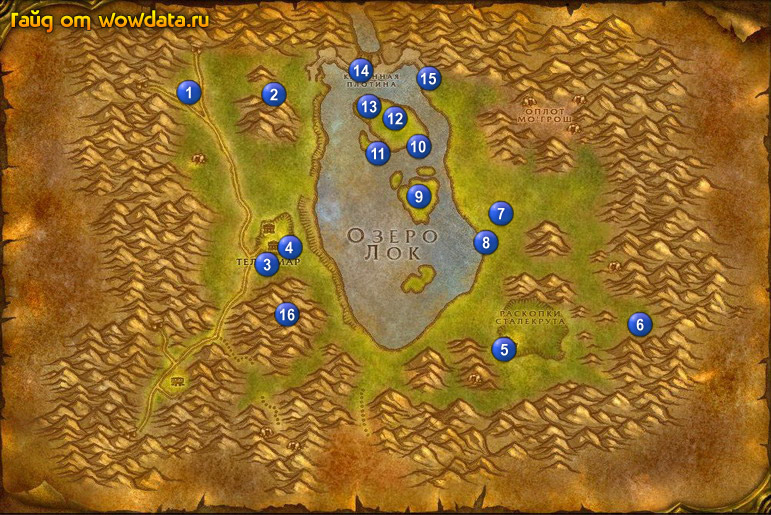

1) Остановитесь в башне в Лок Модан 1 (24, 18) начните <Грязные лапы> и <Заказ Грозовой Вершины>.
2) Идите в пещеру 2 (35, 18) и делайте <Грязные лапы>, затем вернитесь назад 1 (24, 18) и закончите этот квест.
3) Около Телcамар откройте пункт полета 3 (33, 50).
4) Начните <Раскопки Сталекрута> в последнем доме справа 4 (37, 48).
5) Закончите <Раскопки Сталекрута> 5 (65, 67), начните <Сбор идолов>.
6) Начните <Отчет о ходе раскопок> 5 (66, 66).
7) Делайте <Сбор идолов> на месте раскопок рядом. Затем вернитесь и закончите его.
8) Начните <Охота на кроколисков> в доме 6 (82, 62), в противоположной части дома начните <Похвальба охотника>.
9) Делайте <Похвальба охотника> в окрестностях около дома затем вернитесь сдайте квест и начните <Вызов охотнику>. Делайте его, мобов можно найти около точки 7 (64, 42).
10) Закончите <Вызов охотнику>, начните <Месть Вайрин> (у NPC неподалеку на балконе).
11) Идите начните <Пропавшее снаряжение Бинглза> 8 (63, 47).
12) Делайте тут <Охота на кроколисков> на берегу и на острове 9 (54, 38).
13) Соберите все детали для квеста <Пропавшее снаряжение Бинглза> :
10 (54, 27 сорвиголовка), 11 (48, 30 гаечный ключ), 12 (51, 23 молот), 13 (48, 20 отвёртка).
14) Бегите на дамбу и начните <Прямая и черная угроза> 14 (46, 13).
15) Идите на восточную часть дамбы спуститесь по лестнице, и слева от нее будет бочонок с взрывчаткой 15 (56, 13), используйте и закончите квест. Тут же начните <Прямая и черная угроза>.
16) Закончите <Прямая и черная угроза> 14 (46, 13).
17) Идите вниз и закончите <Отчет о ходе раскопок> в Телcамар, начните <Отчет в Стальгорн>.
18) Идите делайте <Месть Вайрин> 16 (38, 61). (если сами не можете то найдите группу или вообще эту цепочку не делайте, не такая уж она и нужная, хотя шмот полезный для хантеров, но хантом, варлоком или пряморуким друидом и соло убить не проблема).
19) Вернитесь назад к дому 6 (83, 62), закончите <Охота на кроколисков> и <Месть Вайрин>, начните <Месть Вайрин>. Закончите его в этом же доме на балконе (или я хз что это).
20) Идите закончите <Пропавшее снаряжение Бинглза> 8 (63, 47).
21) Направляйтесь в Стальгорн, в городе откройте пункт полета , посетите оружейного тренера, и закончите <Отчет в Стальгорн>. Игнорируйте квест <Порох для Сталекрута>.
22) Идите в метро , поезжайте в Штормград.
23) В Штормград закончите <Заказ Грозовой Вершины>.
24) Посетите оружейного тренера (ну и разумеется все выучите) и откройте пункт полета .
(Это все при условии что играете вы скажем за найт эльфа и никогда в этих 2-ух столицах не были).
25) Из города по дороге идите в Элвиннский лес оттуда в Красногорье.